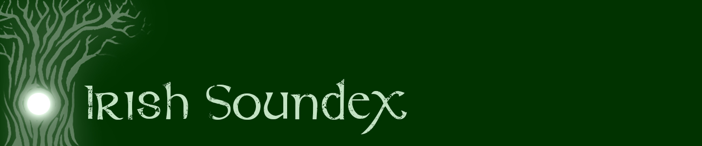

The Irish Soundex site is an eas to use platform for returning a phonetic coding system for surname pronunciation. This site is purposly designed for providing this formate for Irish surnames. Users simply have to input their Irish surname into the search box, and the programme returns the results.